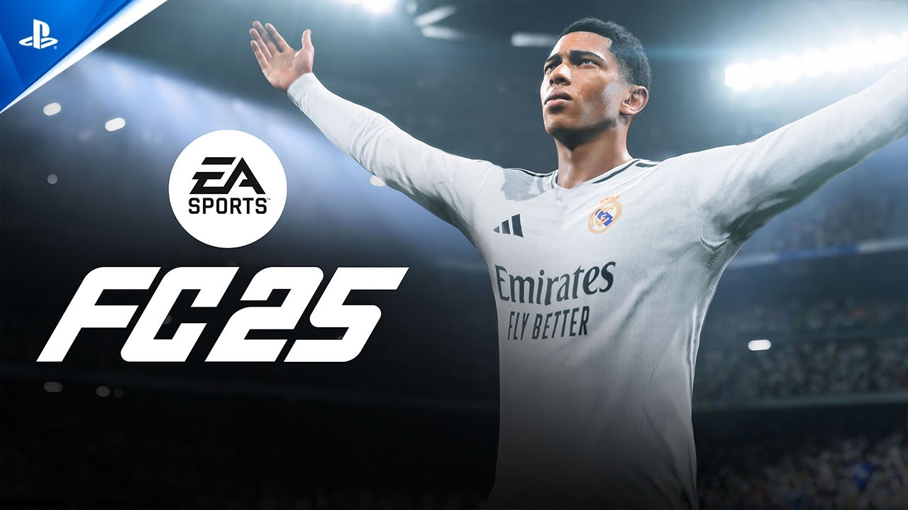
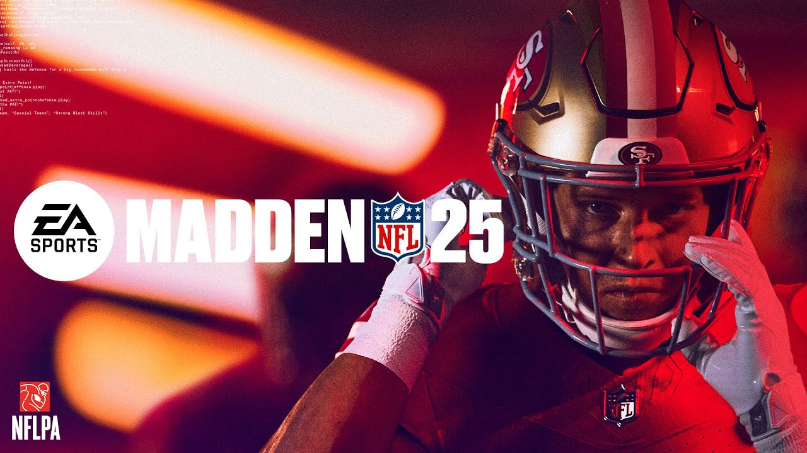

¿Qué son los juegos de deportes?
El género de deportes en los videojuegos simula la práctica de disciplinas deportivas reales, permitiendo a los jugadores experimentar la emoción de competir en fútbol, baloncesto, tenis, carreras y muchos otros deportes. Estos juegos pueden centrarse en la simulación realista, la gestión de equipos o la acción arcade, y suelen ofrecer modos multijugador y torneos. El género de deportes es popular por su accesibilidad, competitividad y la posibilidad de recrear grandes momentos deportivos o crear nuevas leyendas virtuales.
¿Qué caracteriza a los juegos de deportes?
Los juegos de deportes destacan por su capacidad para recrear la emoción de la competencia y el trabajo en equipo. Más allá de simular reglas y dinámicas reales, estos títulos suelen ofrecer modos de carrera, personalización de atletas y equipos, y torneos que reflejan la progresión de una temporada deportiva. Además, fomentan la estrategia, la toma de decisiones rápidas y el desarrollo de habilidades específicas según el deporte representado. La interacción social, ya sea en partidas locales o en línea, es otro aspecto clave que impulsa la popularidad de este género, permitiendo a los jugadores enfrentarse o colaborar con amigos y rivales de todo el mundo.
Juegos icónicos del género
Fifa 25

FIFA 25 es la última entrega de la popular saga de simuladores de fútbol desarrollada por EA Sports. Este título destaca por sus mejoras en la jugabilidad, gráficos realistas y nuevas animaciones que ofrecen una experiencia más inmersiva en el campo. Incluye modos clásicos como Carrera y Ultimate Team, además de innovaciones en la inteligencia artificial y físicas del balón. FIFA 25 permite a los jugadores competir con equipos y ligas actualizadas, tanto en solitario como en línea, consolidándose como una referencia para los fanáticos del fútbol virtual.
NBA 2k25

NBA 2K25 es la nueva entrega de la reconocida saga de simuladores de baloncesto desarrollada por 2K Sports. Este título destaca por su realismo gráfico, animaciones mejoradas y una jugabilidad refinada que captura la intensidad de la NBA. Incluye modos populares como Mi Carrera, Mi Equipo y la Liga, permitiendo a los jugadores crear su propio atleta, gestionar franquicias o competir en línea. NBA 2K25 ofrece plantillas actualizadas, nuevas opciones de personalización y una experiencia inmersiva tanto para fanáticos del baloncesto como para quienes buscan competencia y estrategia en la cancha virtual.
Madden NFL 25

Madden NFL 25 es la última edición de la reconocida franquicia de simuladores de fútbol americano desarrollada por EA Sports. Este juego celebra el legado de la saga con mejoras en la jugabilidad, gráficos más realistas y animaciones avanzadas que capturan la intensidad de la NFL. Incluye modos clásicos como Franchise y Ultimate Team, así como nuevas características en la inteligencia artificial y físicas de los jugadores. Madden NFL 25 permite a los fanáticos gestionar equipos, competir en temporadas completas y desafiar a otros jugadores en línea, consolidándose como la referencia principal para los amantes del fútbol americano virtual.
¿Por qué prosperan los juegos de deportes?
Competitividad y emoción: Los juegos de deportes ofrecen la posibilidad de competir contra otros jugadores o la inteligencia artificial, generando adrenalina y desafíos constantes.
Experiencia realista: Muchos títulos buscan simular fielmente las reglas, dinámicas y atmósferas de los deportes reales, lo que atrae tanto a fanáticos como a nuevos jugadores.
Actualizaciones y licencias oficiales: La inclusión de equipos, ligas y atletas reales, junto con actualizaciones periódicas, mantiene el interés y la relevancia de los juegos.
Diversidad de modos de juego: Desde carreras profesionales hasta torneos y modos multijugador, los juegos de deportes ofrecen variedad para diferentes estilos de juego.
Socialización y comunidad: Permiten jugar con amigos localmente o en línea, fomentando la interacción social y la creación de comunidades de fanáticos.
El futuro de los Juegos de Deportes
En la actualidad, los juegos de deportes continúan evolucionando gracias a los avances tecnológicos y la creciente demanda de experiencias más realistas e inmersivas. Las principales franquicias, como FIFA, NBA 2K y Madden NFL, incorporan gráficos de última generación, físicas mejoradas y modos en línea competitivos que permiten a los jugadores enfrentarse a rivales de todo el mundo. Además, la integración de actualizaciones en tiempo real, contenido descargable y eventos especiales mantiene el interés de la comunidad. El auge de los deportes electrónicos (eSports) también ha impulsado la popularidad de estos títulos, convirtiéndolos en plataformas para competencias profesionales y grandes audiencias globales.